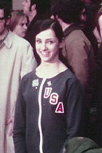

Joan Moore Rice Gnat (USA)
1972 Tokyo Cup AA Bronze
Medalist
1971-1974 USGF AA Gold Medalist

Joan was born on August 14, 1954 and began gymnastics in her native Philadelphia in 1961. Daughter Jeana Rice was a top-level gymnast (7th AA at the 1998 US Championships, 2004 NCAA all-around champion) who attended the University of Alabama. Younger daughter Ashley Gnat also excelled at gymnastics and competed for the LSU Tigers. Joan and husband Ray Gnat own Ace Gymnastics in Longwood, FL.
Competition Results
1964
Jr. Olympic Development Championships (11 and under): 2nd FX
1968
AAU JO Nationals (jr. division): 2nd AA
1970
AAU Championships: 7th AA
Manitoba World Invitational: 2nd Team, 4th AA, 2nd FX, 4th UB
World Championships: 7th Team, 33rd AA
1971
Riga International: 6th AA, 6th
V, 6th B, 8th FX
USA-USSR Dual Meet: 2nd Team, 5th AA
USGF Championships: 1st AA, 1st V, 1st UB 1st FX, 2nd B
1972
Chunichi Cup: 4th AA
Olympic Games: 4th Team, 21st AA
Tokyo Cup: 3rd AA
USA-JPN Dual Meet: 1st FX, 3rd UB
USGF Elite Championships: 1st AA, 1st FX, 2nd B, 3rd UB
1973
AAU Championships: 1st AA
Chunichi Cup: 10th AA
USGF Elite Championships: 1st AA, 1st 1FX, 2nd VT, 3rd UB, 3rd B
1974
2nd Elite Qualifier: 1st AA
AAU Championships: 1st AA, 1st UB, 1st FX, 3rd V
USA-CSSR Dual Meet: 3rd AA
USGF Elite Championships: 1st AA, 1st B, 1st FX
World Championships: 7th Team, 18th AA
World Trials: 3rd AA
This page was created on March 27,
2005 and was last updated on April 9, 2020.
© Gymn Forum